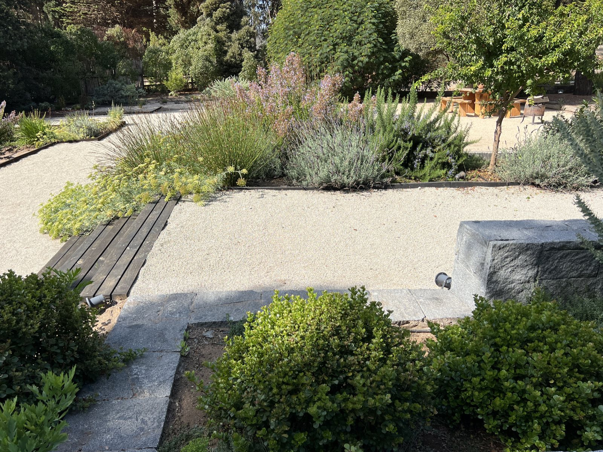
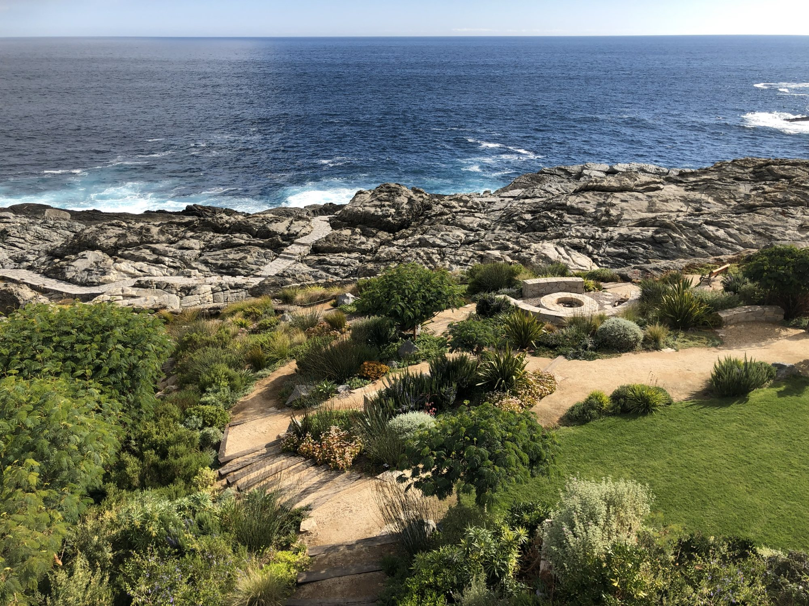
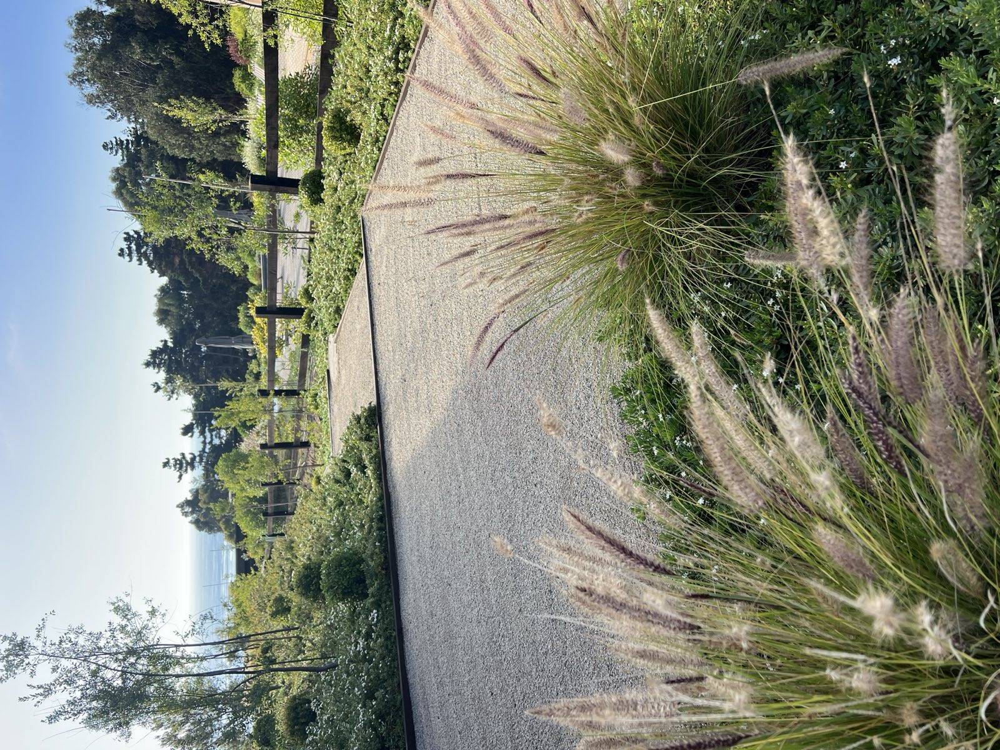
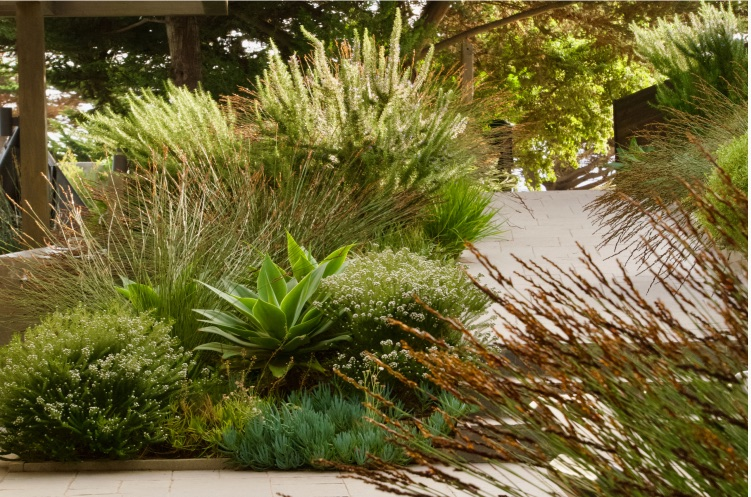

Jardines
con esencia
— Aguas Claras, Cachagua
Diseñamos paisajes donde la vegetación, la arquitectura y la obra construyen una única experiencia del lugar.
Conócenos
Proyectos destacados

Punta Pite

Zapallar casa II

Papudo
Qué hacemos
Carola Page desarrolla jardines y paisajes que buscan revelar el carácter particular de cada lugar, equilibrando la sensibilidad y la visión de un artista con el rigor, el conocimiento y la atención al detalle propios del oficio. Cada proyecto nace de una observación profunda del entorno, reconociendo en la luz, el clima, la topografía, la vegetación existente y las formas de habitar las claves para construir una propuesta única y vinculada a su contexto.
Diseño
de paisajeConstrucción
Mantención
y AsesoríaObras
de exterior

Síguenos en Instagram para estar al día de las últimas novedades y ser testigo del proceso creativo que hay detrás de nuestro trabajo.